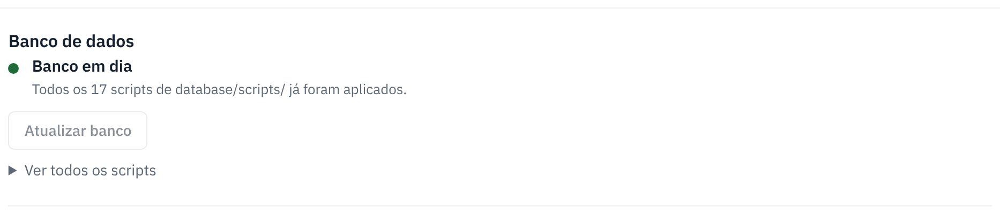
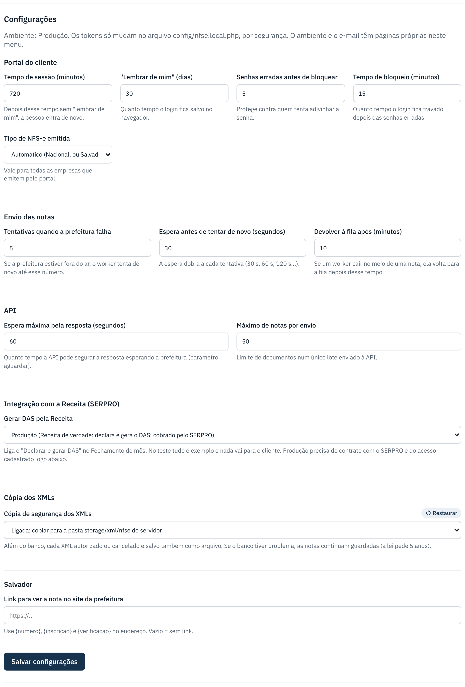

Sistema: worker, banco, diagnóstico e e-mail
Tudo o que mantém as notas saindo, controlado pelo painel, sem terminal.
lightbulb Antes de começar
- Clique em Sistema no topo do painel. A bolinha ao lado mostra a saúde: verde tudo ligado, amarela pausado, vermelha parado.
- O worker é o programa que leva as notas da fila até a prefeitura e a SEFAZ. Sem ele ligado, as notas ficam "Na fila".
-
Worker: ligue, pause ou reinicie
O bloco Worker diz se ele está trabalhando. Os botões:
- Ligar worker: liga quando está parado.
- Pausar envios / Retomar envios: segura as notas na fila (ex.: prefeitura fora do ar).
- Reiniciar worker: use depois de atualizar o sistema.
- Desligar worker: termina a nota atual e para.
No servidor de verdade o ideal é o worker ser instalado como serviço, para ligar sozinho quando o servidor reinicia (veja o manual de implantação).

-
Fila de envio: acompanhe
Mostra quantas notas estão esperando envio, enviando agora, agendadas e quantas falharam nas últimas 24 h. Número parado em "esperando" com worker desligado = ligue o worker.

-
Banco de dados: atualize depois de cada versão nova
Quando o sistema é atualizado, pode vir um script novo de banco. O bloco Banco de dados avisa e mostra o botão Atualizar banco. Faça backup antes, como sempre.

-
Diagnóstico: confira tudo de uma vez
Clique em Rodar diagnóstico. Ele confere servidor, configuração, banco, worker, certificados das empresas e o acesso à internet da prefeitura e da SEFAZ. Não altera nada e não envia nota. Cada problema vem com Como resolver. Mande o resultado para quem cuida do servidor quando o problema for de lá.
-
E-mail: configure uma vez
Usado para mandar o acesso ao portal e o "Esqueci a senha". Preencha Servidor SMTP, Porta, Criptografia, Usuário, Senha, Remetente e o Endereço do portal, e clique em Salvar e-mail. Depois mande um e-mail de teste para você.
Os dados você pega com quem cuida do e-mail da empresa. A senha fica guardada criptografada.

-
Configurações e histórico
Configurações reúne ajustes do portal, do envio e da API, cada um com explicação. Últimas ações nesta tela mostra quem fez o quê e quando.
Em Integração com a Receita (SERPRO), a opção Gerar DAS pela Receita liga a declaração do Simples e o DAS pelo sistema: Teste (exemplo, grátis) ou Produção (de verdade). Para a Produção, cadastre logo abaixo as chaves do contrato e o certificado do escritório. Veja Fechamento do mês e guia DAS.

Se der errado
| O que aconteceu | O que fazer |
|---|---|
| Bolinha vermelha / "Worker parado". | Clique em Ligar worker. Se não ligar, rode o diagnóstico e mande o resultado para quem cuida do servidor. |
| Muitas notas em "falharam nas últimas 24 h". | Abra o Monitor e veja o motivo de cada uma. Rode o diagnóstico para ver se é internet ou certificado. |
| O diagnóstico diz que a prefeitura ou a SEFAZ "não respondeu". | Pode ser instabilidade deles ou bloqueio de internet do servidor. Tente de novo em alguns minutos; se continuar, fale com quem cuida do servidor. |
| "Ligar worker" pede confirmação de notas de PRODUÇÃO. | Há notas de produção esperando. Ao ligar, elas vão de verdade. Confira se é isso mesmo antes de confirmar. |